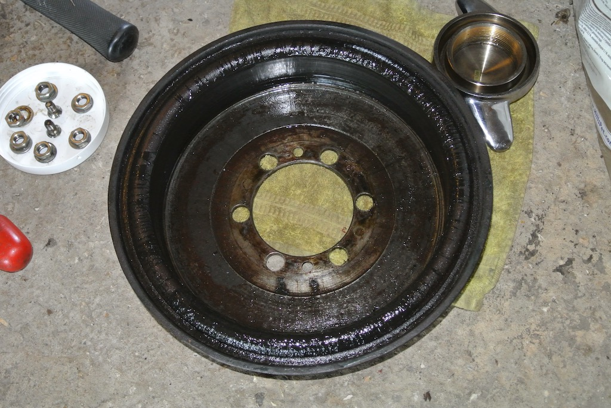Following the Sussex Wanderers run to Goodwood and around the track (in the rain most of the way) on Wednesday 9th August 2017 I put the TC on axle stands to give the underside a clean.
There is a known design problem with the TC whereby oil from the differential can work its way down the half shafts and into the brake drums. The mechanism to prevent this is a bronze bush with a spiral groove that is intended to 'wick' the oil back into the axle. But it doesn't work very well. Whenever I have the rear wheels off the ground I check them for oil and so far they have been dry.
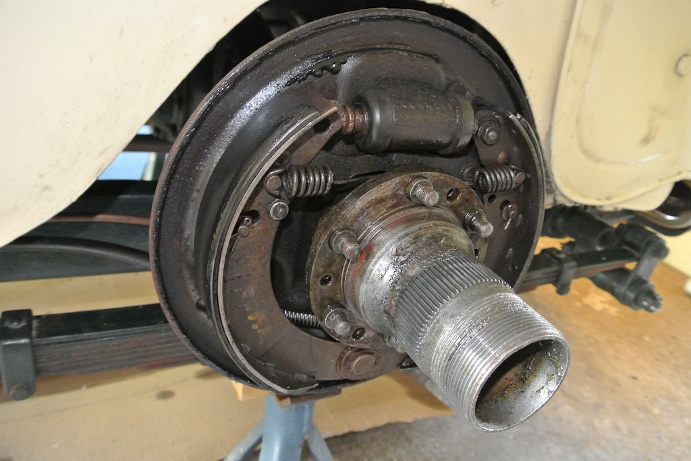
On this occassion, however, I found what can be seen in these two photos. The inside of the drum was coated in oil and the brake shoes were soaked in it!
Sherrill goes into some length about this 'design' problem, but this was clearly a different order of magnitude. So I decided to remove the hub and half shaft to investigate. The first problem was to separate the hub from the bearing carrier, the latter having the brake drum studs. In order to separate the two I had to make use of the two threaded holes in the hub flange that have no hole beneath them in the bearing carrier. By screwing a bolt (actually a stud with two nuts on one end) into the hole I was able to force the two surfaces apart. I had expected the hub to come away with the half shaft attached, since the latter is pressed into the hub to form a single unit. However, the hub simply pulled off the half shaft! Not only that, but the half shaft was stuck in the axle. I also found that the nut holding the bearing, and thus the bearing carrier, to the axle was loose and had torn off the inside tab of the tab washer.
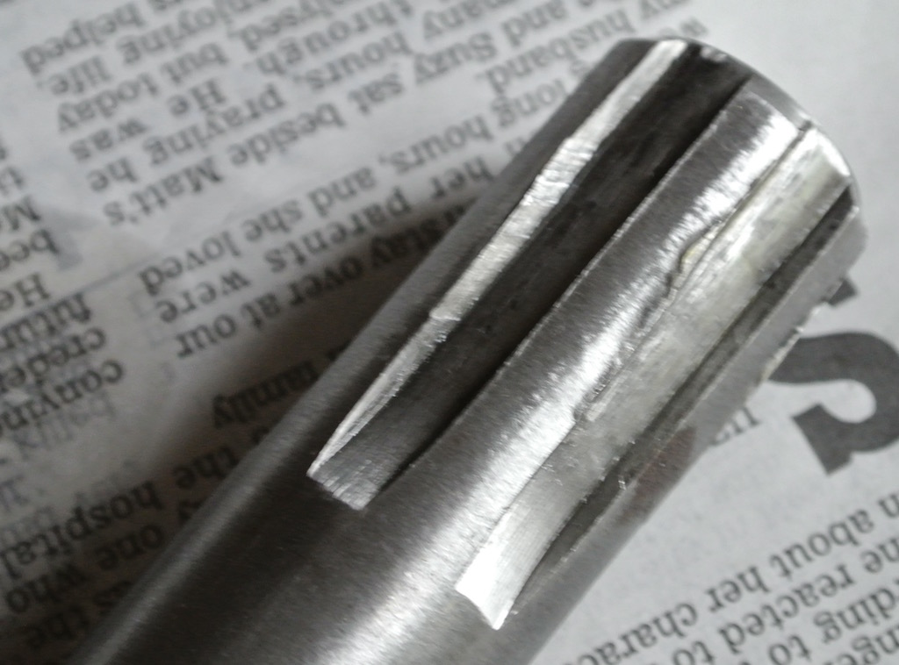The half shaft would pull out a few inches, but then stick. Bob Gruneau, via the mg-tabc site, told me that the TC spider differential cross has a hole in it, through which you can get a 3/8" steel rod. I only had a 1/4" rod, which bowed when I hit it. However, I found an aluminium tube to go around the 1/4" rod, which stopped it bowing, and I was able to drive out the half shaft using a 3lb lump hammer! In the photo you can see the damage to the splines on the differential end of the half shaft.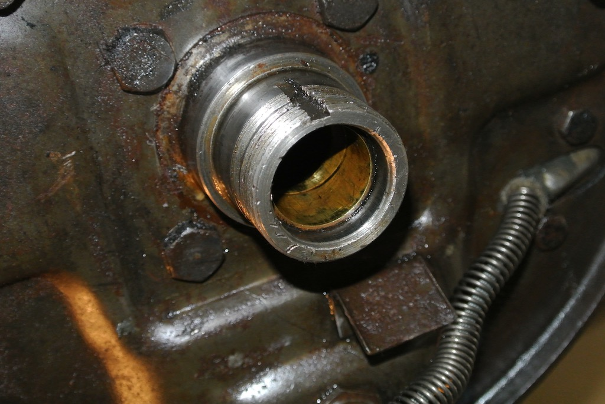
This photo shows the axle after the half shaft was removed. You can see the bronze bush that contains the scroll that is supposed to wick oil back into the axle. So that the bushes do not foul the sleeves that cover the splines on the half shaft (supplied as part of Roger Furneaux's nuts with seals) I needed to remove them. So I made a tool, similar to the one I used to remove the bushes in the distributor, to pull out the bushes from the axle. One came out easily, whereas I had to firstly hammer the other bush in a small amount before I could pull it out.
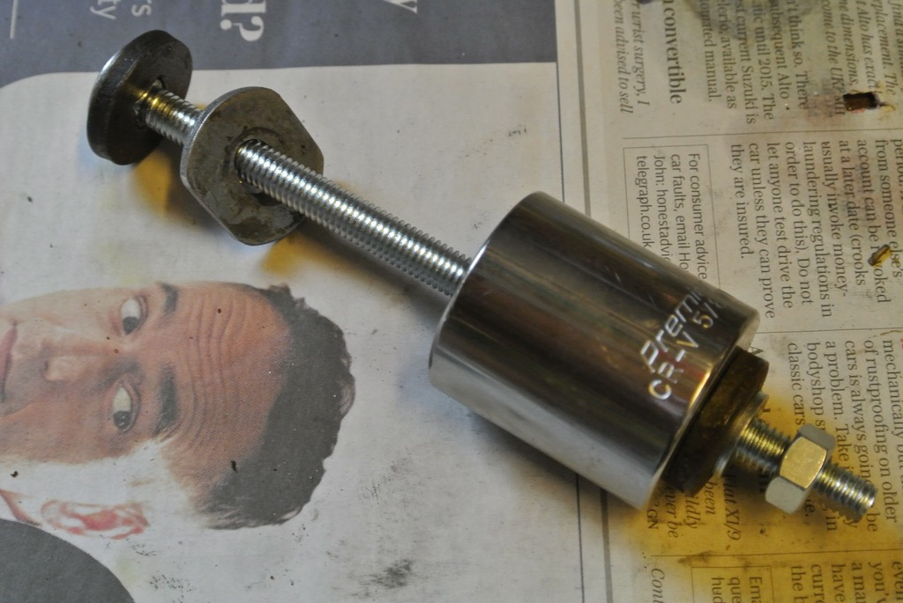Once the bush was partially out I had to use a large spanner between the socket and the axle, since the hole in the socket was not deep enough to take the full length of the bush.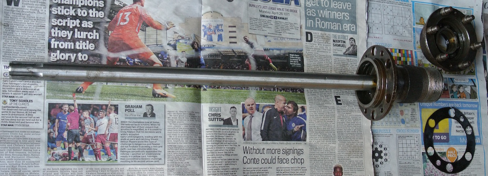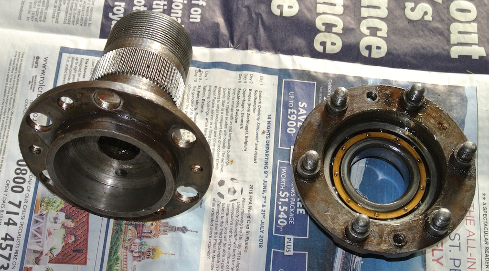
The first photo shows the off-side hub and half shaft, together with the bearing carrier and paper gasket that goes between the flanges. The hub and half shaft are essentially one unit. The second photo shows the near-side hub that had simply slid off the half shaft. There was no gasket on this side, however, the diameter of the half shaft (over the splined area) seemed to be consistently 1", so the wear was presumably in the hub. Both bearings (in the bearing carriers) felt smooth and tight, so I cleaned them in degreaser and re-packed them.
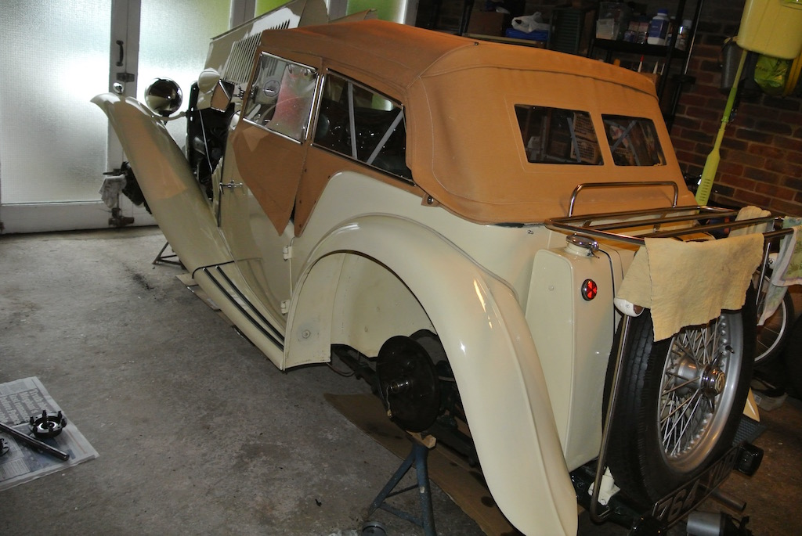So at this point I have TC4985 on axle stands, the half shafts and hubs removed from both sides and the oil flinger bushes removed to make way for the sleeves to be used with new hexagonal nuts with integrated oil seals.
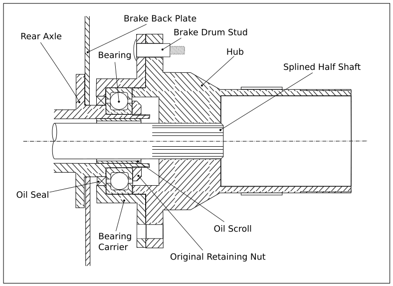The diagram shows the general arrangement of the hub and axle end (not to scale) as it was originally.
On Saturday 2nd September we had a day out at Beaulieu to attend the International Autojumble. As well as looking around the house, the gardens and the motor museum, we visited the Roger Fureaux's stand and the MG Octagon Club stand. I had spoken to Roger and to Pete at the Octagon club prior to our visit about my needs. However, the only parts that Roger had brought with him were the left and right hand hexagonal nuts with lip seals. They each came complete with the tab washer and sleeve to fit over the half shaft splines. I also bought from him a 50mm socket to fit the nuts, but this had a 3/4" drive and he did not have an adapter down to 1/2".
We then went to the Octagon Club stall where I bought a differential casing gasket, hub gaskets, prop shaft bolts and brake linings. We walked around to the stall of the hub manufacturer (who supplies the Octagon Club), but he didn't have any for the TC. So on the following Tuesday I ordered a hub and half shaft from the Octagon Club. They will be pressed together by the manufacturer, but will take at least three weeks to arrive.
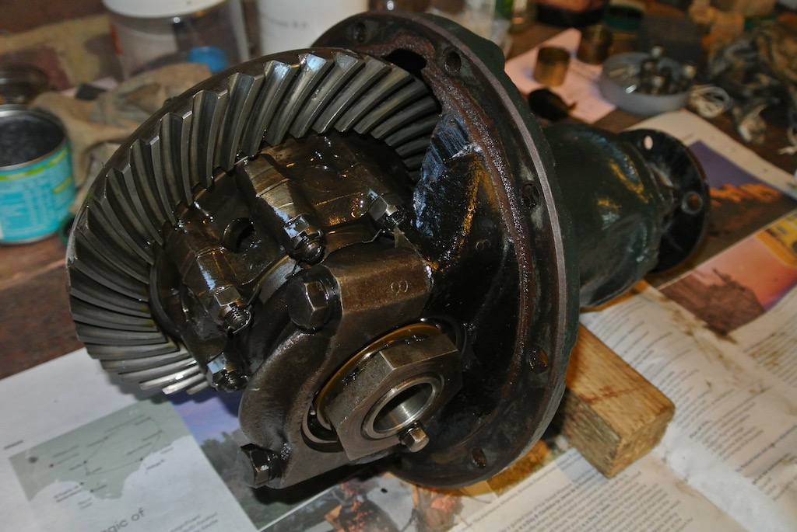Since the near-side half shaft was stuck in the differential, I thought it wise to inspect the differential. This would also give me a chance to replace the gasket and so stop the oil leak. The ten nuts around the differential casing came off easily, but removing the differential was more of a controlled fall on to some cardboard! As far as I could see, looking into the gearing, all are undamaged. In fact, everything seemed very smooth, with only a tiny amount of end play in the pinion.
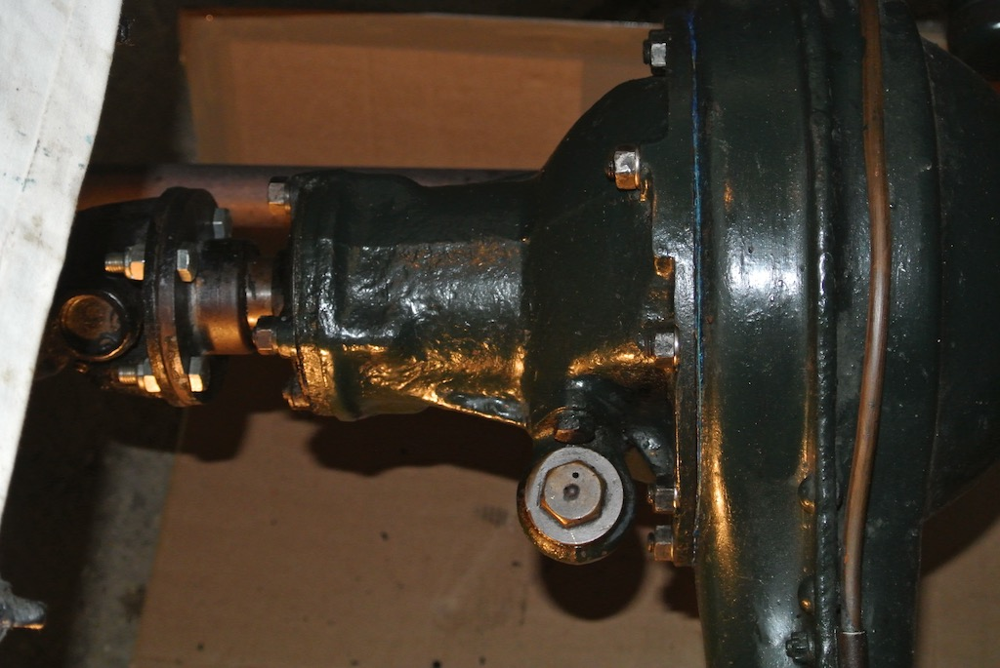
Getting the differential back into the axle banjo was more difficult. It was too heavy to lift it off the ground while lying under the car and, even with a rope harness, I could not lean over far enough to position the differential. So I built a platform under the car from bricks and wood, removed the spare wheel and the top section of the luggage rack so as to get closer. I could then lower the differential on to the platform and then manoeuvre it into place. I used Hylomar Blue gasket sealant on both sides of the new gasket. I also replaced the spring washers under the ten nuts. The photo shows the differential after the prop shaft had been reconnected, using new bolts with aerotight nuts.
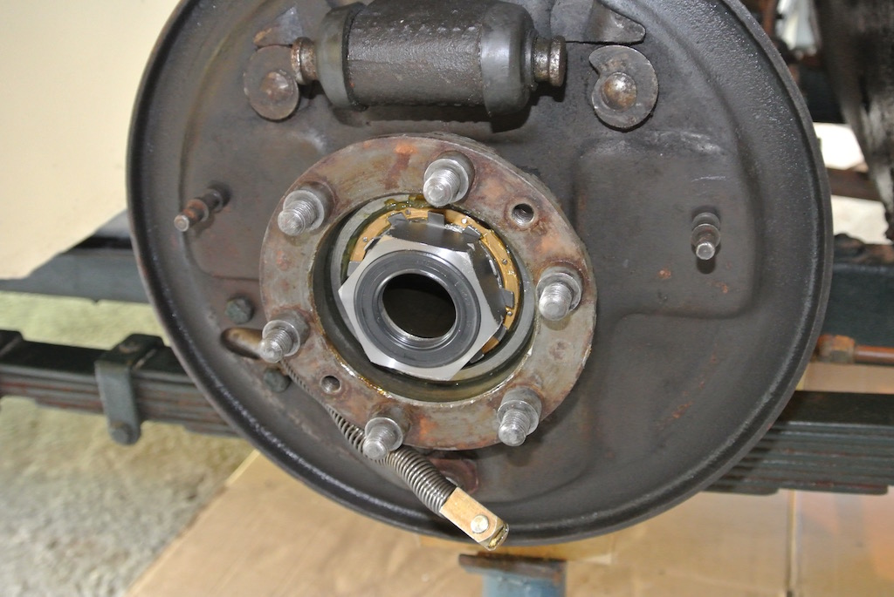So that was all about dismantling, inspecting and buying new parts. Now we move on to put things back together.
On Saturday 9th September I re-fitted the bearing carriers using Roger Furneaux's hexagonal nuts with lip seals. The nuts needed to be tightened to 130 ft-lb, which was the upper limit of my torque wrench. The photo shows the near-side end of the axle with the greased bearing in place. My torque wrench (and the one that I borrowed) only works on right-hand threads, but the near-side is a left-hand thread. So I tightened it as much as I could, which was effectively what I needed to do on the off-side to reach that torque.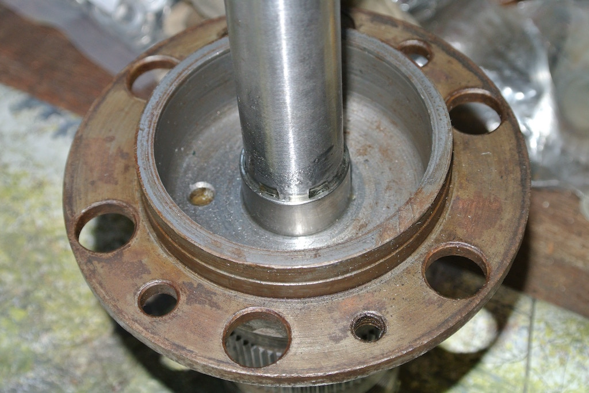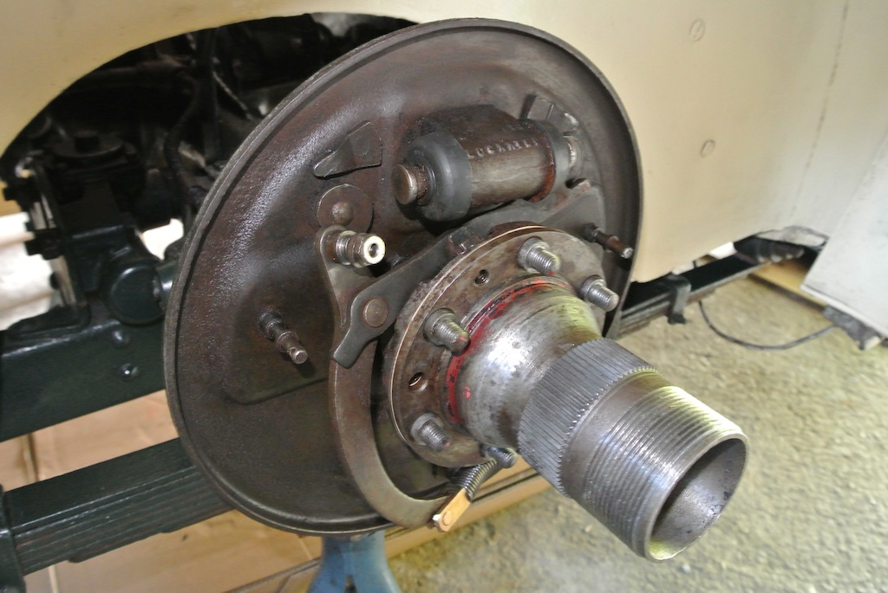
The sleeve supplied with the hexagonal nuts is glued over the splines using epoxy resin. This is on the off-side half shaft, which is then slid into the axle and into the differential. Without the gasket there was a gap between the flanges of 12 thou, so I added the gasket and tightened the hub on to the bearing carrier only with the brake drum countersunk screws.
From ordering the hub and half shaft on September 5th it took until November 17th for them to arrive. This was partly due to them being available for dispatch just after we went on holiday to California for three weeks and then, on our return, the Octagon Club staff being at the NEC Classic Car show for several days. So, while the car was on axle stands I did a few other jobs. I chose to reline the rear brake shoes (rather than buy new shoes). Then I crack tested the steering drop arm and removed the prop shaft to clean it, along with the underside of the tunnel. Finally, while the gearbox cover was removed, I fitted the brake and clutch pedals draught excluder.
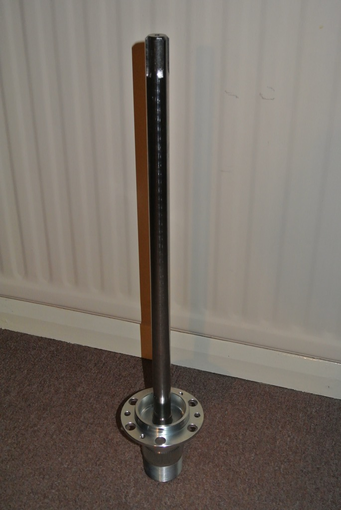When the hub and half shaft arrived I noticed that there is no grease hole and nipple in the hub to grease the bearing. I guess the assumption is that people will replace the bearing with a sealed variety, but the bearings on TC4985 seemed to be in good condition. So it means that I will need to withdraw the hub slightly so as to add grease to the bearing.
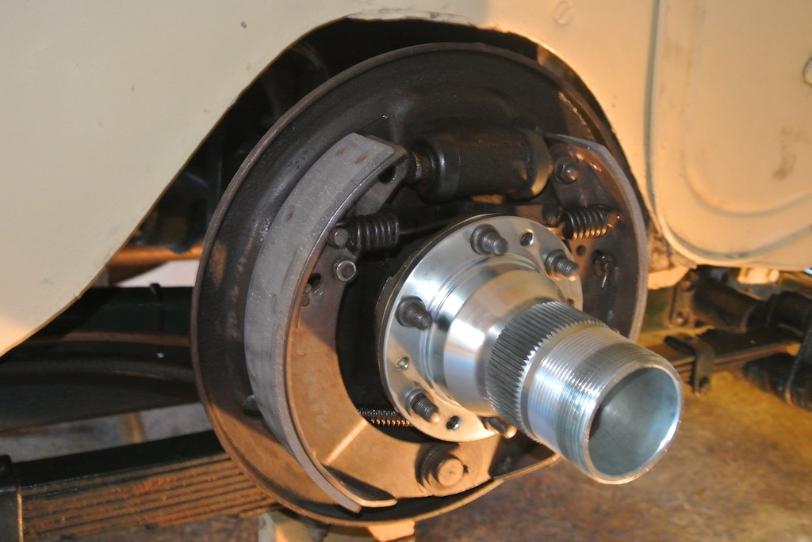The sleeve that fits over the half shaft and inside the seal was epoxied in place (making sure to fill the splines) and the unit inserted into place. Once again there was plenty of gap between the hub flang and the bearing carrier and I used a paper gasket with no sealant.
Finally, after 104 days off the road, I lowered the car to the ground and took it for my usual 'figure of eight' test run. After that I raised it off the ground again, checked for any oil in the rear drums, checked the tightness of the various bolts that I had replaced and adjusted the brakes.
So no oil in the brake drums and no oil leak from the differential (apart from a slight weep from the pinion seal). However, I did notice some rotational movement in the near-side front wheel! I swapped the front wheels and the slack moved to the off-side. It therefore looks as though the splines in that wheel are worn. I will try fitting the spare wheel to see if that is better.
© David James 2018 Last updated: 2nd April 2018